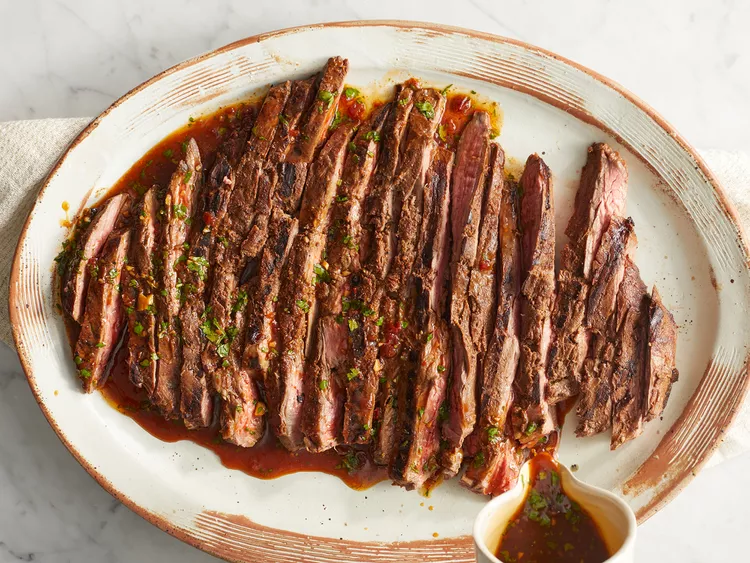

Lisa's Favorite Carne Asada Marinade

Description
A juicy and flavorful carne asada starts with a delicious carne asada marinade.
This recipe begins with a 24-hour marinade to allow the flank steak to soak up all the tasty and fresh flavors before grilling.
Whether you serve it as tacos, a salad topping, or simply chow down on the tender,
flavor-packed steak by itself, this will be the best carne asada you've ever experienced.
Ingredients
- Fruit Juice: ¾ cup orange juice, ½ cup lemon juice, ⅓ cup lime juice
- Soy Sauce: ½ cup soy sauce
- Seasonings and Spices: 1 bunch fresh cilantro, chopped, 4 cloves garlic, minced, 1 tablespoon chili powder, 1 tablespoon ground cumin,
1 tablespoon ground paprika, 1 tablespoon ground black pepper, 1 teaspoon dried oregano
- Chipotle Pepper: 1 teaspoon finely chopped canned chipotle pepper
- Olive Oil: ½ cup olive oil
- Carne Asada: 3 pounds flank steak
Steps
- Combine orange juice, lemon juice, and lime juice for marinade in a large glass or ceramic bowl.
Add cilantro, soy sauce, garlic, chili powder, cumin, paprika, black pepper,
chipotle pepper, and oregano; stir to combine.
- Slowly whisk in olive oil until well combined. Remove 1 cup of the marinade and place in a small bowl;
cover with plastic wrap and refrigerate for use after the steak is cooked.
- Place steak between two sheets of heavy plastic (resealable freezer bags work well) on a solid, level surface.
Firmly pound steak with the smooth side of a meat mallet to a thickness of 1/4 inch.
- After pounding, poke steak all over with a fork. Place steak in the marinade in the large bowl, cover, and marinate in the refrigerator for 24 hours.
- When ready to cook, preheat an outdoor grill for medium-high heat, and lightly oil the grate.
- Remove steak from the marinade and shake off excess. Discard the remaining marinade.
- Cook steak on the preheated grill to desired doneness, about 5 minutes per side for medium-rare.
- Remove steak from grill and slice across the grain.
- Place on a serving platter and pour the reserved, unused marinade over top. Serve immediately.